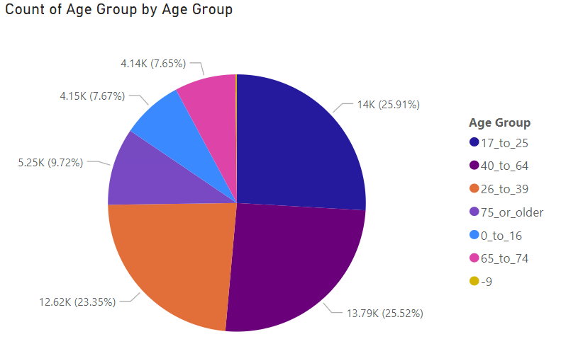

 This pie chart is about the age group of Australian Road Deaths. All the datas are from 1989 to September 2022. We can see the largest group is 17 to 25, the second largest group is 40 to 64. The percentage of these two groups is very close, which is what we need to focus on.